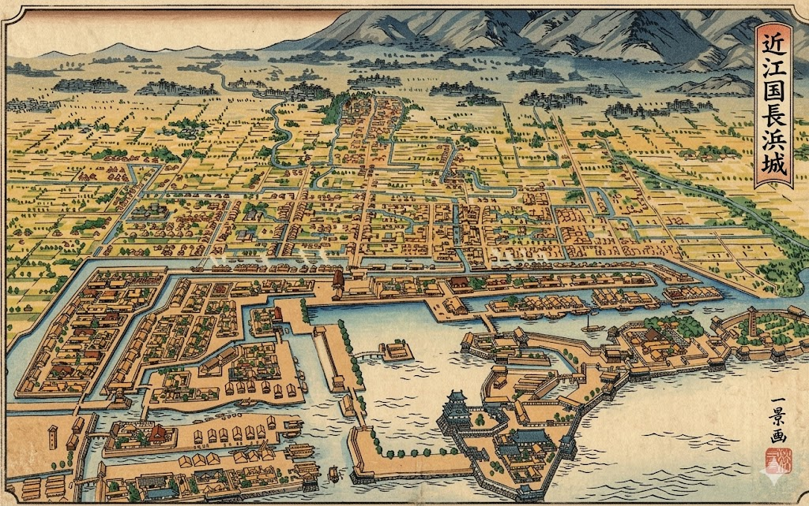
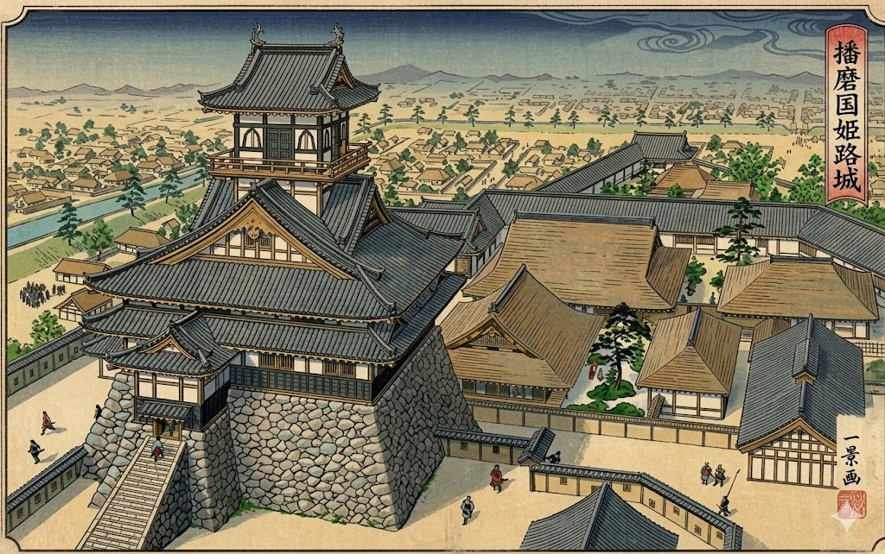
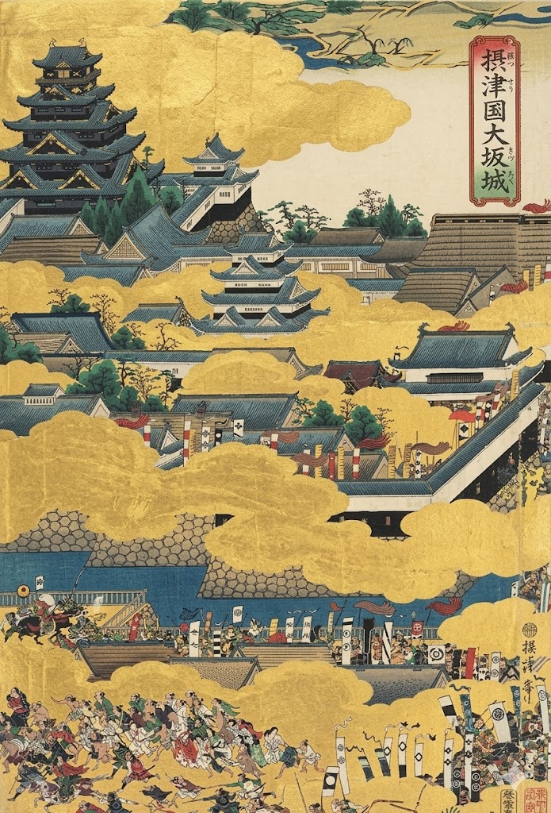
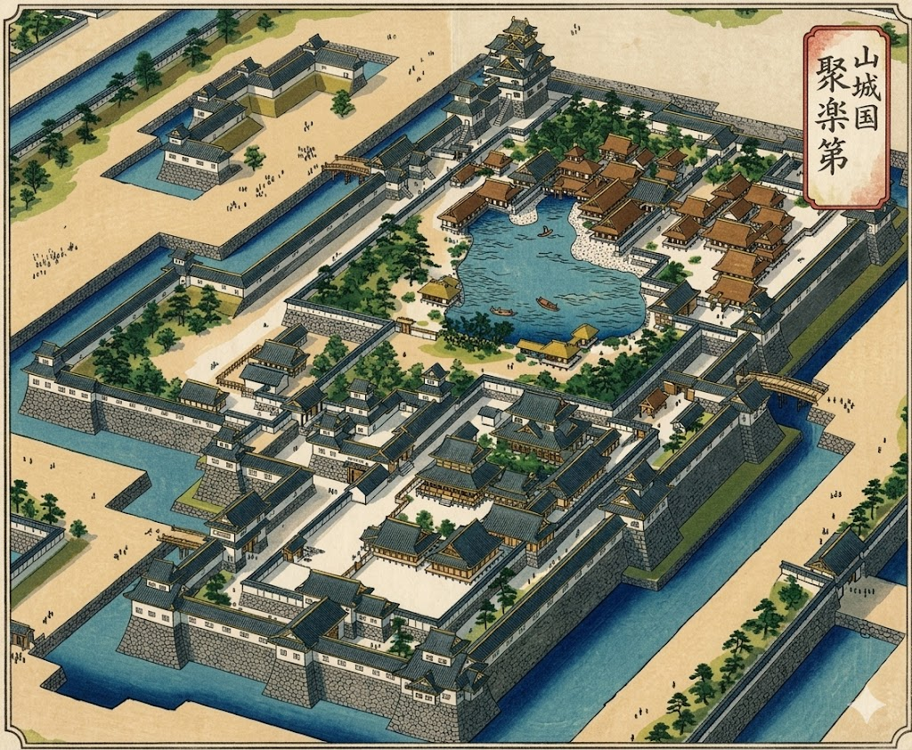
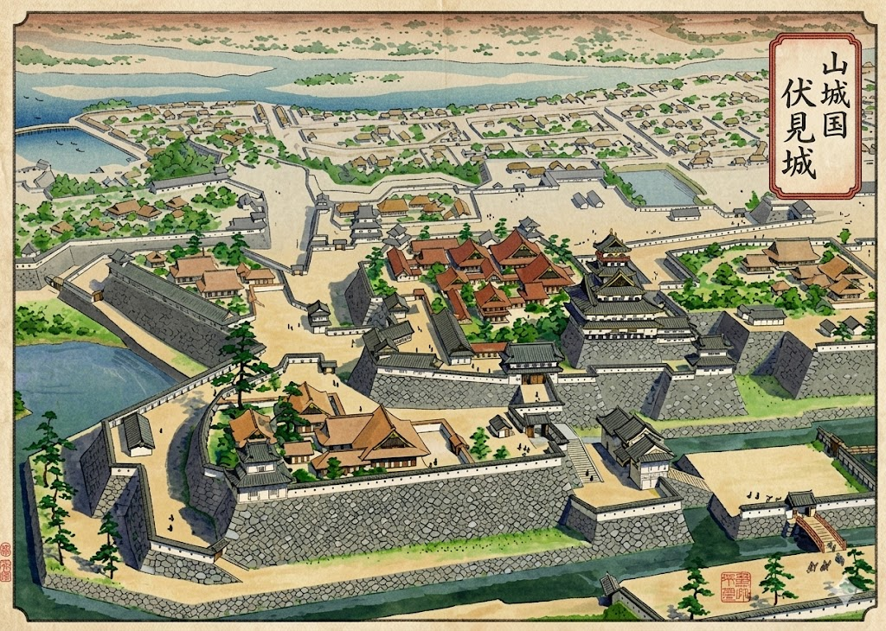

〜 秀吉公の天下統一と黄金の遺構 〜
足軽から天下人へと昇り詰めた豊臣秀吉。彼の築いた城郭は、戦のための要塞から、自らの圧倒的な権威と財力を天下に示す「見せる城」へと進化を遂げました。

浅井氏滅亡後、信長公から拝領した地に秀吉公が初めて築いた一国一城の本拠地。琵琶湖の水を取り入れた、出世の出発点となる水城です。

中国攻めの本拠地として、信長公の許可を得て三層の天守を建築。後の大天守の礎となり、秀吉公の勢力拡大を支えた重要拠点です。

天下統一の象徴。石山本願寺の跡地に築かれた巨城で、五重八階の黒漆塗りの壁に黄金の装飾が美しく輝く、当時世界最大級の要塞です。

京都に築かれた、政治の中心となる絢爛豪華な邸宅風の城郭。後陽成天皇を迎えるなど、関白としての権威を公家や大名に見せつけました。

秀吉公が晩年を過ごし、その生涯を閉じた終焉の居城。桃山文化の粋を集めた豪壮華麗な城郭で、大名たちが集う政治の要衝となりました。